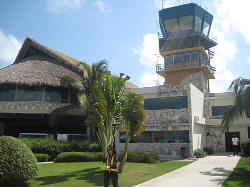
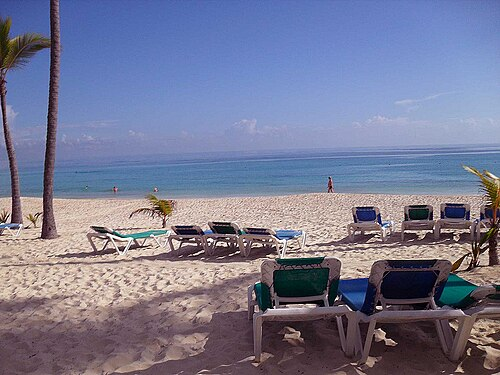

This map shows 5 of the most-searched sights in Punta Cana as photo spots, ranked by how often people search for them: Punta Cana Airport, Playa Blanca, Hoyo Azul, Corales Golf Course and Cabeza de Toro Beach lead the list. Every spot has a pin on the subject and a phone icon showing where to stand, with tips for shooting it on your phone: which lens to use, how to frame it, a settings tip and the best time of day. Directions and Navigate buttons take you to the standing point on foot or by public transport. 3 spots are free to view; the full map is for members.
The 3 free photo spots
1Punta Cana International Airport

Punta Cana International Airport has a look of its own. It was built with open-air terminals and roofs covered in palm fronds, and when it opened in December 1983 it became the first privately owned international airport in the world. It is now the busiest airport in the Dominican Republic, with more than 8.3 million passengers in 2022. Terminal B, opened in November 2014, is the fully enclosed, modern one, with jet bridges.
For photos, the best option is the outdoor terrace in Terminal B, near gates B25 and B26. It faces the taxiway, so aircraft roll past at close range with the gate area behind them. That gives you a travel-day picture with real movement in it, and it is easy to take with a phone.
The terrace is after security, so you need a boarding pass to reach it. It is not a street-level spot for the general public. A glass barrier runs along the front, and you may need to see over it. If you shoot close to the glass, reflections can be a nuisance, so hold the phone close to the glass and shade the screen with your hand. Take the photo while you wait for your flight, and follow any instructions from airport staff. Rules for photography around airports can change, so check the official airport site before you go.
Where it is: The airport is in the Punta Cana area on the eastern side of the Dominican Republic. The terrace itself is inside Terminal B, after security.
Shooting it on your phone
Lens: Start with the default lens (1x) for aircraft passing close by, with the gate area in the frame. Switch to telephoto (2x-5x, depending on your phone) for planes further along the taxiway. Use the ultra-wide (0.5x) only if you want the whole gate frontage; it makes aircraft look small and slightly stretched.
Where to stand: Stand right at the subject (outdoor terrace near gates B25 and B26, facing the taxiway). Aircraft taxiing in front of the terrace at close range, with the terminal's gate area in the frame. The photo itself is not taken at the icon. The actual spot is the outdoor terrace inside Terminal B, after security, near gates B25 and B26, facing the taxiway. From there aircraft taxi in front of you at close range, with the terminal's gate area in the frame. Choose a spot along the terrace where the glass is clean and you can see clearly.
Framing: Turn on the gridlines and put the taxiing aircraft on one of the lower third lines, leaving space in front of it to show it is moving. Include a bit of the gate area so the picture says 'airport'. Hold the phone close to the glass to cut reflections. Take a short burst or a Live Photo as the plane passes, then pick the best frame.
Settings tip: Tap on the aircraft to set focus, then drag the exposure slider down a little so the sky does not turn white and the plane keeps its detail. Keep your hands steady and take several shots, as planes keep moving.
Best time: Winter is the best time for this terrace, as the light is better. In summer the afternoon light comes from behind the aircraft and makes the photos backlit.
2Playa Blanca (Punta Cana)

Playa Blanca is a beach with shallow turquoise water, and it is a good place for relaxed holiday photos. The corner people photograph most is in the shallow water, where swings are set out from the sand. Someone sitting on a swing with the turquoise sea behind them gives a 'floating over the ocean' look. It also suits a romantic couple shot. Two other pictures are worth making. One is the painted Playa Blanca sign in the foreground, with the glittering sea behind it. The other is a wide view down over the beach and coastline, taken from the cliff above the restaurant. That cliff has no separate name, so look for the best angle once you are there.
The beach is inside a gated resort area, so it is not a casual stop. The swings and the sign may be moved or taken away, so treat them as a bonus and not a certainty. If they are missing, the turquoise water and the line of the shore still make a good picture.
For the swing shot, let the person on the swing fill the lower half of the frame so the sea fills the rest. Take a few frames in a row, because swings move and eyes close. Before you wade out, wipe your lens with a dry cloth. Salt spray and sunscreen leave smears that look like haze in bright light.
Where it is: Playa Blanca is on the coast of the Punta Cana area, inside the gated Puntacana/Cap Cana resort area. A restaurant is associated with the beach, and a cliff above the restaurant is described as a viewpoint.
Shooting it on your phone
Lens: Use the default lens (1x) for the swing shot, so the person looks natural against the sea. Switch to ultra-wide (0.5x) for the sign with the sea behind it. Try telephoto (2x-3x, depending on your phone) from the sand to bring the swing and the water closer without wading out.
Where to stand: Stand right at the subject: the phone icon on the map marks the spot. Photograph the person on the swing with the turquoise sea behind them. For the sign, stand a few steps back on the sand so the lettering is in the foreground.
Framing: Turn on gridlines and put the swing on one third of the frame, leaving open sea beside it. Keep the horizon level. For the wide view, use panorama mode from the cliff above the restaurant. As an alternative to the swings, take the sign with the sea glittering behind it.
Settings tip: Tap on the person or the sign to focus, then drag the exposure slider down a little so the sea stays blue and does not wash out. Use Live Photos or a quick burst on the swing so you can choose the best moment. Keep your phone dry near the water.
Best time: Early morning or late afternoon usually gives softer light and fewer people on the sand. Midday sun can make the sea glare, so lower the exposure slider if you shoot then.
3Hoyo Azul
Hoyo Azul is a natural pool in the limestone, with water that looks strikingly turquoise when the sun reaches it. A cliff rises behind the pool and the jungle crowds in around the edges. That mix of bright water, pale rock and green leaves makes it easy to photograph, even with a phone. Visitors reach it inside Scape Park Punta Cana in Cap Cana, so it is part of a park day rather than a quick roadside stop.
The best views are from the wooden walkway and the stair platforms at the edge of the pool. These give you a safe, steady place to stand and look across the water to the cliff. Guides describe the colour of the water as the main attraction, so make it the centre of your picture and let the cliff and trees frame it. Your best shot is the turquoise pool with the cliff behind and the jungle around it.
The water is lovely in direct sun, but the surrounding rock and leaves can be dark and patchy. Take a few frames at different moments and compare them. If you want to shoot close to the water, some guides suggest a waterproof case for your phone. Inside the park there is also a suspension bridge on the forest path and a wooden staircase down to the water, which may be quieter spots for a second angle. Entry is by park ticket, and the park may restrict some equipment, so check the official site before you go.
Where it is: Hoyo Azul is inside Scape Park Punta Cana, in the Cap Cana area of Punta Cana. You reach it by walking through the park's forest paths.
Shooting it on your phone
Lens: Start with the ultra-wide (0.5x) to fit the pool, the cliff and the jungle frame into one shot from the platforms. Then switch to the default lens (1x) for a calmer, more natural view across the water. If your phone has telephoto (2x-5x), use it to pick out the cliff face or the colour of the water without leaning over the edge.
Where to stand: Stand right at the subject: the phone icon on the map marks the spot. From there you look across the pool to the cliff, with the jungle framing the sides. The turquoise water is the part to build the picture around.
Framing: Switch on gridlines and put the waterline on a lower third line, with the cliff filling the upper part. Let the leaves and branches make a natural frame at the edges. A once-inside alternative is the suspension bridge on the forest path or the wooden staircase down to the water, which may be quieter.
Settings tip: Tap on the brightest part of the water to focus, then slide the exposure down a little so the turquoise stays rich and the highlights are not washed out. Keep a dry cloth handy to wipe the lens. If you go close to the water, use a waterproof case, as guides suggest.
Best time: Early morning, before the crowds arrive, is the most common advice. Some guides prefer mid-morning to mid-afternoon (around 10:00 to 14:00), when direct sun lights the water and gives the bluest colour. If you can, try both.
2 more spots for members
These spots are on the map as grey numbered pins. Where to stand, the phone tips, photos and directions for them come with Explorer membership.
- 4Corales Golf Course · members
- 5Cabeza de Toro · members
Get every spot with Explorer membership
Explorer opens every spot on every map in the library: where to stand, how to frame it on your phone and how to get there, plus the Xdatrys Maps app with maps saved on your phone for use without signal. $9.99 a month or $59.99 a year; cancel any time.
Join Explorer Compare free and Explorer
Not ready to join?
Get Pocket Lens, our free daily smartphone travel photography newsletter.
Free, and you can unsubscribe at any time. If the form does not show, sign up on our newsletter page.
Questions
What are the top photo spots in Punta Cana?
The first three on this map are Punta Cana Airport, Playa Blanca and Hoyo Azul. They are ranked by how often people search for them. The full map has 5.
Where should I stand to photograph Punta Cana Airport?
Stand right at Punta Cana Airport (outdoor terrace near gates B25 and B26, facing the taxiway). Start with the default lens (1x) for aircraft passing close by, with the gate area in the frame.
When is the best time to photograph Playa Blanca?
Early morning or late afternoon usually gives softer light and fewer people on the sand. Midday sun can make the sea glare, so lower the exposure slider if you shoot then.
How do I get to Hoyo Azul?
No Underground, tram or train stops serve this spot, so head for Scape Park Punta Cana in Cap Cana.
Credits
Map data © OpenStreetMap contributors (ODbL); base map built with Protomaps from OpenStreetMap data. Photos from Wikimedia Commons, credited under each photo with their licence. Background reading for the free spots: Punta Cana International Airport (Wikipedia, CC BY-SA). Access rules and opening times change: check before you go.